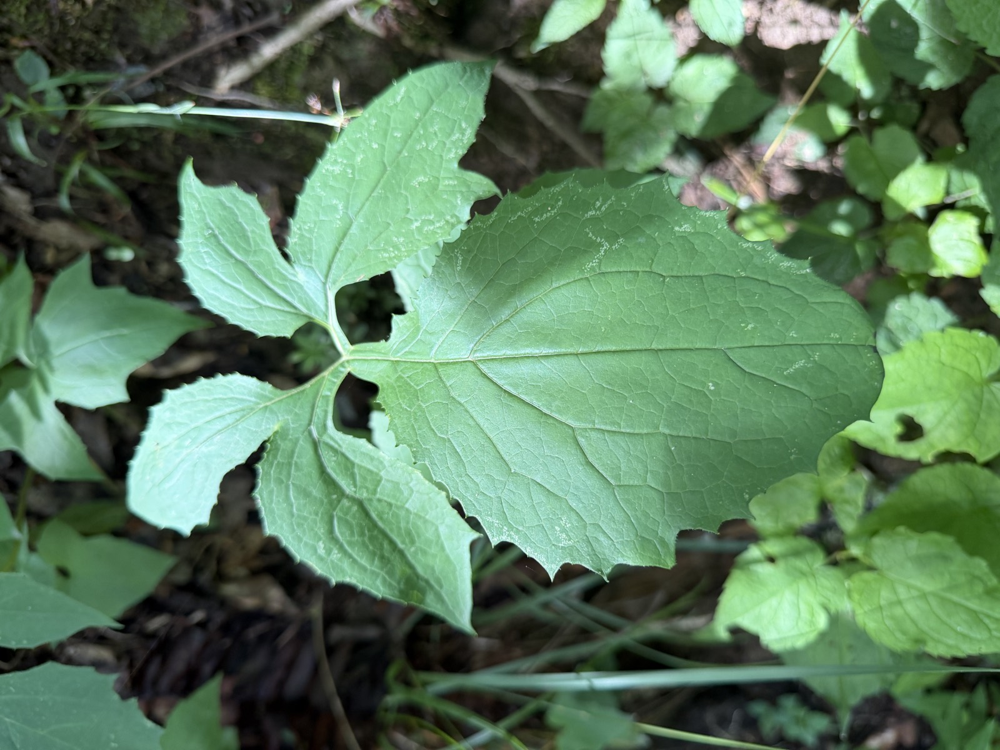
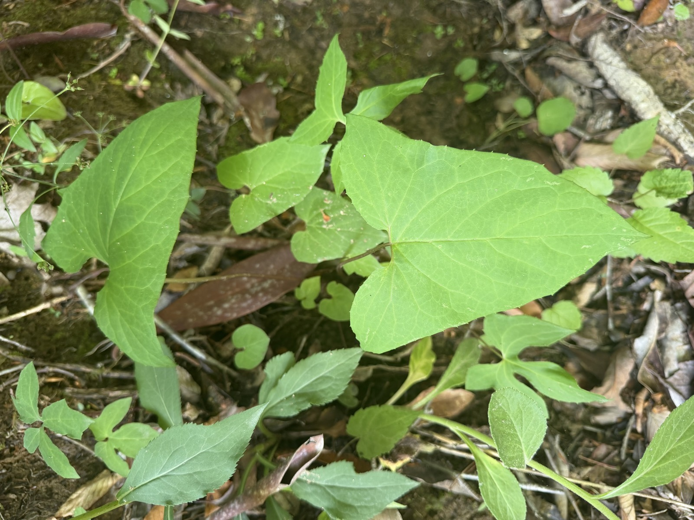
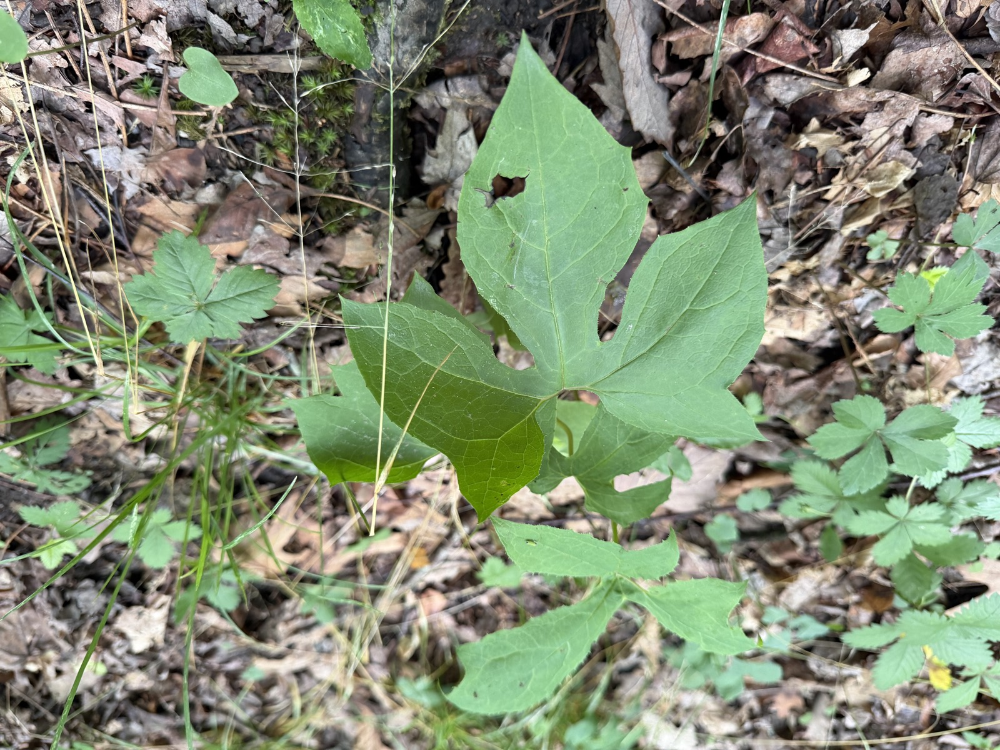
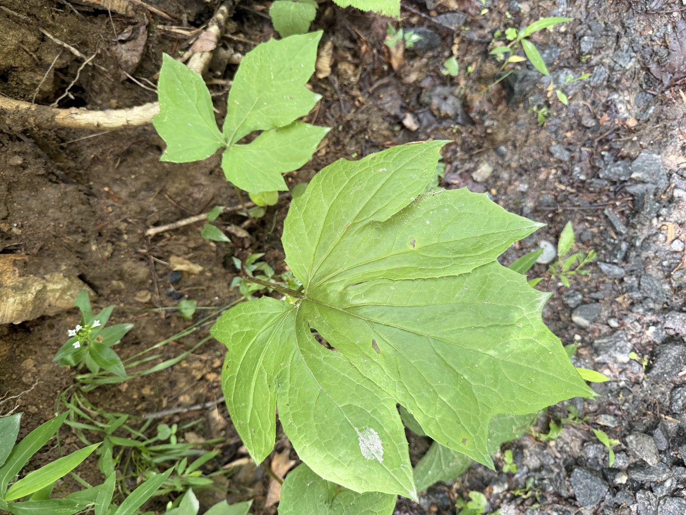
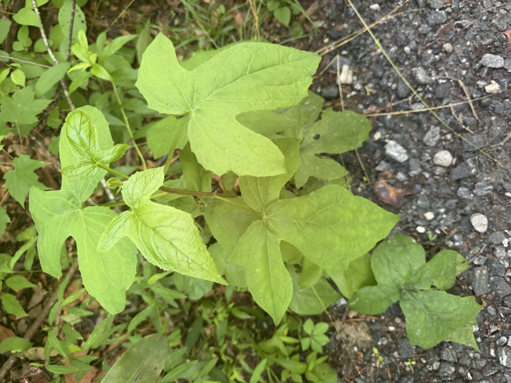

Herbarium · a birthday specimen
Nabalus
Prenanthes → Nabalus
For a twenty-first birthday
This plant changes its leaves as it grows up, and once changed its name. Both, it turns out, are good ways to come of age.
The same plant, four ages of one leaf
On a single Nabalus the lowest and highest leaves can look like different species — the form keeps re-cutting itself toward something truer.

I

II

III

IV
On Becoming Nabalus
You began as one whole leaf,
round and unwritten,
a single soft intention of green —
the self before the self has edges,
the face the years have not yet cut.
Then the margins learned to answer.
Lobe by lobe — a notch, a turning —
each new edge a question
you had carried quietly
and dared, at last, to keep.
By the full height of summer
your hands were open:
deep-cut, many-pointed, wide,
no two leaves alike upon one stem —
as though you wore at once
every shape you had ever been,
and were not sorry for a single one.
And the old name loosened like a seed.
Prenanthes — the word that held you
when you were too new to hold yourself —
gave way to the truer sound:
Nabalus. The name you grew into,
not the name you were given.
And so, at twenty-one:
not one fixed shape,
but the long, brave habit of becoming —
the same self the seasons keep re-cutting
into something truer,
unmistakably, and newly, you.
